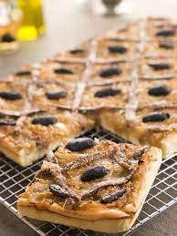

Pissaladière

Description
Pissaladière is a dish of flatbread with toppings in the cuisines of Liguria and Nice. It is often compared to pizza.
The dough is usually a bread dough thicker than that of the classic pizza Margherita,
and the traditional topping usually consists of caramelised onions, black olives, and anchovies.
Ingredients
- 1kg onion
- 2 heaping tablespoons powdered sugar
- herbes de provence
- olive oil
- 400g bread dough
- 300g anchovies in oil
- 15 black olives
Steps
- In a large deep skillet, heat 5 tablespoons of olive oil.
- Cut the onions into rings.
- Once the oil is hot you can put the onions in the pan, add pepper, Provence herbs and powdered sugar.
Above all, do not put salt because there will be anchovies. Sugar is essential to remove the acidity of the onion.
- Sauté the onions until their color is slightly yellow. They must not come back too much because they will still cook in the oven.
- The secret of the Pissaladière is there. Keep a few anchovy fillets and put the rest in the pan with the onions.
The anchovies will melt in the heat and mix with the onions. If you can add a tablespoon of anchovy oil to the preparation, it will be better.
- You can spread the bread dough on a baking sheet greased with olive oil.
- Pour your preparation on the dough and put anchovies and olives for decoration.
- Preheat your oven to 220°C and then add the pissaladière.
- For the cooking time as soon as the bread dough is cooked (see the edges of the dough) you can take out your pissaladière.
- You have to let the pissaladière cool because it is best eaten cold.
- You can accompany it with a frisee salad and a Bandol rosé, it's excellent.